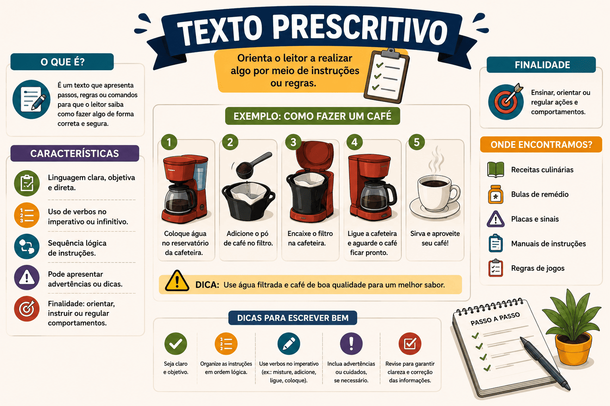

Texto Prescritivo: O que é, Características, Exemplos e Diferenças
Você já parou para pensar no que acontece se você decidir ignorar o manual de montagem de um móvel? No máximo, a gaveta vai ficar torta. Mas e se você decidir ignorar uma cláusula do seu contrato de aluguel ou uma lei de trânsito? Nesse caso, você sofrerá punições severas, como multas ou processos. Essa diferença de "peso" é o que define o texto prescritivo.
O texto prescritivo é a tipologia textual da ordem, da lei e da obrigação. Enquanto outros textos tentam nos convencer ou nos dar dicas, o texto prescritivo não abre margem para escolha: o leitor deve obedecer rigorosamente ao que está escrito, sob pena de sofrer sanções.
Nas provas de vestibulares, concursos públicos e no ENEM, essa tipologia quase sempre aparece como uma "pegadinha" para confundir o candidato com o texto injuntivo (que apenas aconselha). Compreender essa diferença de coerção (força obrigatória) é o segredo para não errar essas questões.
Neste artigo, você aprenderá exatamente o que é o texto prescritivo, quais são suas marcas linguísticas, os gêneros em que ele mais atua no nosso dia a dia e o contraste definitivo entre ele e o texto injuntivo.

O que é o texto prescritivo?
O texto prescritivo é um tipo textual que tem como finalidade ditar regras, impor normas e exigir procedimentos específicos que devem ser cumpridos à risca pelo leitor. Ele não tem a intenção de persuadir amigavelmente; ele determina como algo deve ser feito.
Texto Prescritivo é aquele que instrui de forma impositiva e obrigatória. Diferente de um simples conselho, as regras contidas em um texto prescritivo possuem caráter coercitivo, ou seja, o seu descumprimento gera consequências, penalidades ou anulação de direitos.
Quais são as principais características do texto prescritivo?
Por lidar com regras e leis, o texto prescritivo precisa ser extremamente claro para não gerar brechas na lei. Suas principais marcas são:
Marcas linguísticas e estruturais
- Verbos no Modo Imperativo ou Infinitivo: Utiliza o imperativo para dar ordens diretas ("Pare", "Proíba-se") ou o infinitivo com valor impositivo ("Obrigar", "Pagar a multa", "Preencher de caneta preta").
- Uso de verbos de obrigação: É muito comum o uso de verbos auxiliares que indicam dever ("O candidato deverá apresentar documento original", "É proibido fumar").
- Linguagem Denotativa e Objetiva: A linguagem é puramente literal (sentido de dicionário). Não há espaço para metáforas, gírias ou subjetividade, pois a regra precisa ser entendida da mesma forma por todos.
- Estruturação em Tópicos ou Artigos: Em textos mais complexos (leis e contratos), as regras são organizadas hierarquicamente em capítulos, artigos, parágrafos ( § ), incisos ( I, II, III ) e alíneas ( a, b, c ).
Função da Linguagem
Assim como no texto injuntivo, a Função Apelativa (ou Conativa) está presente aqui, pois o texto busca intervir diretamente no comportamento do leitor. Porém, essa função atua de forma muito mais severa: não é um "apelo" emocional, é uma determinação legal ou normativa.
Texto Prescritivo x Texto Injuntivo: A grande diferença
Este é o ponto mais testado nas provas. Ambos pertencem ao "grupo" dos textos instrucionais (que mandam fazer algo), mas a natureza do "comando" é diferente.
Texto Injuntivo (Sugere / Aconselha)
Não é obrigatório. O objetivo é ajudar, guiar ou persuadir o leitor. Se você não seguir uma receita de bolo (texto injuntivo), o bolo pode queimar, mas você não cometeu nenhum crime.
Exemplos: Propagandas, receitas, manuais, autoajuda.
Texto Prescritivo (Obriga / Impõe)
É de cumprimento obrigatório. O objetivo é normatizar a sociedade ou um processo. Se você não obedecer a um edital ou a uma lei de trânsito, será eliminado, multado ou preso. Há coerção.
Exemplos: Leis, Constituição, editais de concurso, regras de trânsito.
Gêneros Textuais Prescritivos do dia a dia
Vivemos rodeados por textos prescritivos que organizam a vida em sociedade. Veja os mais comuns:
- Editais (ENEM, Vestibulares, Concursos): "O candidato deve comparecer ao local de prova munido de caneta esferográfica de tinta preta e material transparente. O não cumprimento resultará em eliminação."
- Leis e Códigos (Constituição, Código Penal, CLT): "Art. 121. Matar alguém: Pena - reclusão, de seis a vinte anos."
- Contratos (Aluguel, Prestação de Serviços): "O Locatário deverá pagar o aluguel até o dia 5 de cada mês, sob pena de multa de 10% sobre o valor devido."
- Regimentos Internos (Escolas, Condomínios): "É terminantemente proibida a utilização da piscina após as 22h00."
- Bula de Remédio (Seção de Contraindicações): Embora a bula tenha partes injuntivas, as seções "Não tome este medicamento se..." são prescrições rigorosas de segurança.
Questão de aplicação
Questão: (Vestibular / Adaptada) Leia o texto abaixo retirado de um edital de vestibular:
"Capítulo III - Da Realização das Provas
Art. 14 – Os portões de acesso aos locais de prova serão abertos às 12h00 e fechados pontualmente às 13h00 (horário de Brasília).
§ 1º – O candidato que chegar após as 13h00 não poderá entrar no local de prova, independentemente do motivo alegado, sendo automaticamente desclassificado do certame."
Sobre a classificação tipológica do fragmento acima, é correto afirmar que se trata de um texto:
- Descritivo, pois detalha com riqueza de adjetivos o ambiente em que a prova ocorrerá.
- Injuntivo, pois funciona como um manual de dicas sugerindo o melhor horário para o candidato chegar.
- Prescritivo, devido ao seu caráter impositivo e normativo, apresentando regras cuja desobediência resulta em penalidade (desclassificação).
- Argumentativo, pois busca convencer os atrasados de que os horários do edital são justos.
- Narrativo, visto que conta, em ordem cronológica, a história de como os portões serão fechados.
Resolução
A alternativa correta é a 3 — Prescritivo, devido ao seu caráter impositivo e normativo...
O texto é um edital, documento que possui força de lei para o concurso. Ele não aconselha o candidato a chegar cedo (como faria um texto injuntivo), ele determina a obrigação do horário sob pena explícita de punição ("automaticamente desclassificado"). A estrutura em Artigos e Parágrafos ( § ) também é uma forte marca estrutural dessa tipologia.
Resumo: Como identificar o Texto Prescritivo?
O texto prescritivo não pede, ele manda e pune quem não obedece.
- Objetivo Maior: Regular condutas, estabelecer normas inquestionáveis e leis de convívio ou procedimentos.
- Obrigatoriedade: Total. O não cumprimento implica em consequências (multas, exclusão, prisão).
- Linguagem: Formal, objetiva, livre de emoções ou duplos sentidos. Uso intenso de verbos como "dever", "poder", "proibir".
- Exemplo clássico: Se cair um Edital do ENEM ou um trecho da Constituição na prova, marque sem medo: tipologia prescritiva.
Continue estudando Produção Textual
- Texto Injuntivo: O que é, Características, Exemplos e Diferenças
- Texto Descritivo: O que é, Características, Tipos e Exemplos
- Texto Informativo: O que é, Características, Estrutura e Exemplos
- Gêneros discursivos: conceito, tipos e exemplos
- Competências da Redação do ENEM: guia completo das 5 competências
- Produção Textual e Redação — página 1
- Produção Textual e Redação — página 2
Referências
MARCUSCHI, Luiz Antônio. Produção textual, análise de gêneros e compreensão. São Paulo: Parábola Editorial.
KOCH, Ingedore Villaça; ELIAS, Vanda Maria. Ler e Escrever: estratégias de produção textual. São Paulo: Contexto.
Explore Outros Conteúdos
Continue seus estudos acessando outras seções do site Mestre Kira: